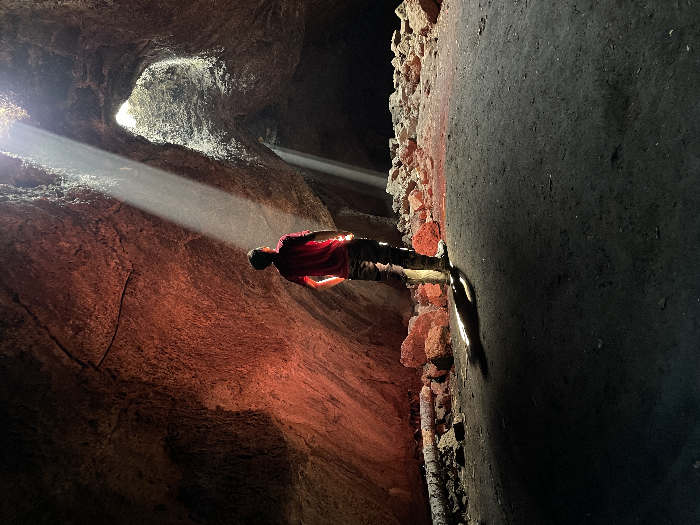
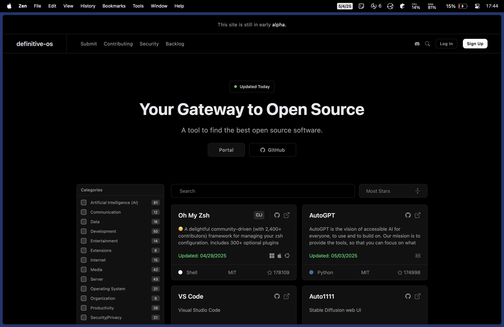
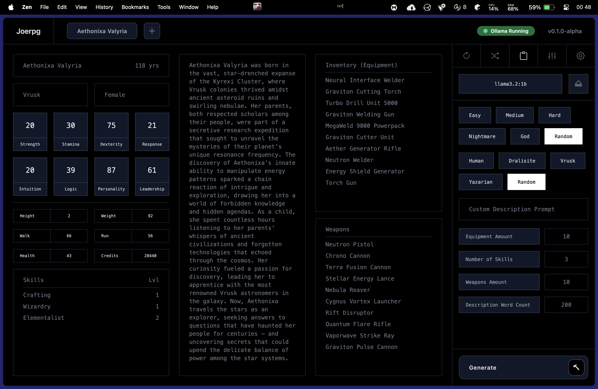

Lucas Julien
I'm an absolute perfectionist, open source enthusiast, tech nerd, and adventure motorcyclist. I also like science fiction, existential topics, and writing.


01
My System
My daily driver is an M2 Macbook Air. I'm seldom stationary so the battery life, quality, and sleek-ness of Macbooks strike a chord with me. v2 of my MacOS config is now out!
About Me
01
I'm a perfectionist.
It's pretty annoying. My brain is wired to achieve a level of perfection that just isn't possible within the constraints of reality.
02
I ❤️ open source.
I used proprietary software for most of my life. Like most, I didn't know that viable open source alternatives exist. In a digital world dominated by corporations who orchestrate mass data harvesting, the transparency of open source is something I can't live without.
03
I like exploration.
There's something so extraordinary about nature and the drastically different cultures of people across Earth. I've offroaded with my dad across 8 US states, border to border, 95% on dirt trails. We carry 50-80 pounds of gear to stay self-sufficient. It's a goal of mine to travel around the world one day.


04
My development preferences.
I like development. For smaller projects I use Nuxt and Bun with a Go backend. For future larger projects I'd like to try Nextjs with Node and a Dotnet backend.
10
My favorite books:
1. Careless People
A must read that takes you deep into the corruption and power of Facebook and the destructive consequences for humanity.
2. The Hundred-Year Marathon
An ominous look at how China aims to replace the United States as the dominant superpower - and how we, the US, helped facilitate it.
3. The Origins of Totalitarianism
A study of Nazism and Stalism as political movements and how autocracy can emerge through propoganda, terror, and isolation.
4. Hyperspace
An mind-bending journey through higher dimensions, parallel universes, and time.
11
My favorite movies:
1. Dune (1&2)
Exceptional world design, epic military scenes, a story of politics, and the use of faith for manipulation and control.
2. Arrival
A movie with viable extraterrestrial life and no violence. A thought provoking story about the universe, language, and the nature of time itself.
3. Ex Machina
A story comprised of a web of manipulation and control - revolving around a humanoid AI without moral limits.
4. Oppenheimer
A haunting look at one of the most pivotal moments in modern warfare; the creation of the atomic bomb.
11
My favorite videogames:
1. Civilization 5
Two dimensional, turn based, and the most immersive game I've played. There's nothing like commanding an entire country from a medieval tribe to a nuclear superpower with the fate of billions at your fingertips.
2. FTL: Multiverse
You are the captain of a tiny spaceship in a massive galaxy caught in civil war. FTL has an incredible storyline and insanely detailed lore.
3. Stormworks
An awesome engineering sandbox requiring you to use data and electrical nodes along with Lua scripts to bring creations to life.
4. Deep Rock Galactic
My go-to game to burn off stress. It's pure chaos with stupid dwarfs, crazy weapons, and even crazier enemies. Rock and stone ⚒️!
My Thoughts
1. The Universe is Deterministic
05.10.2025
2. Civ 5: A Global Superpower
07.11.2025
Projects
01
A place to consolidate the best of open source projects in a modern and scalable way. It functions with a mix of automation and human input.
02
A companion site for definitive-opensource, built with the Nuxt framework. It pulls data from applications.json and displays them with features not possible with a README like filtering and searching.

03
An NPC generator for RPGs. Stats, race, and sex are generated with Math.random(). These values are then passed into Ollama (a way to run local LLMs) which generates a description, skills, and inventory. For optimal results you should train a local model (I like Gemma3) on your RPG's documentation so that you get relevant information.
